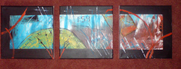

“Welcome To My Art!”

"My Sping Morning"
(30×40)
Oil Painting

"Lonely Life"
(30×40)
Oil Painting

“About Me!”
Hello!
Thank you for visiting my blog.I’m from Greece and I’m studying at the University Of Patras. I’m not a professional artist,but art is one of my hobbies.I hope you like my paintings!
Enjoy!!!
This Is A Parallax.js Demo
Scroll For More
“My Autumn Afternoon”
(24×30)x2 + (28×18)x1
Oil Painting

“Music Notes In Art”
(20×50)
Oil Painting

“Clock”
(20×50)
Oil Painting